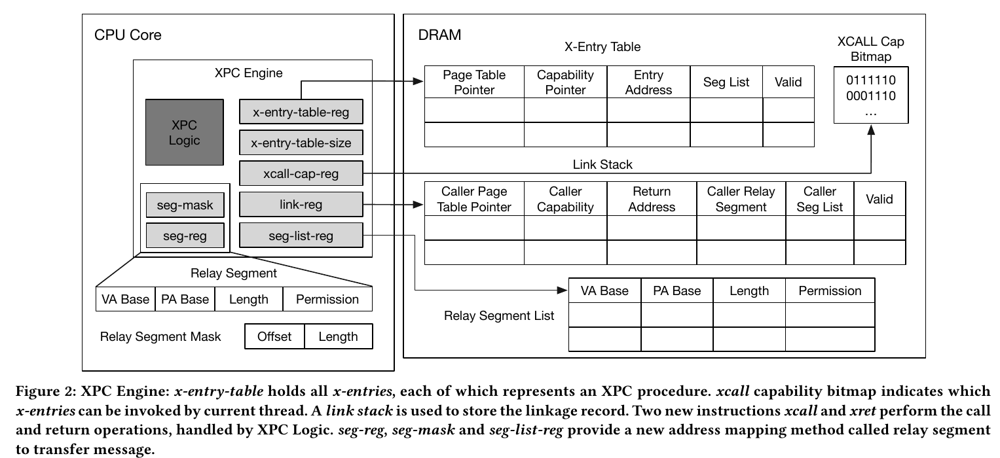
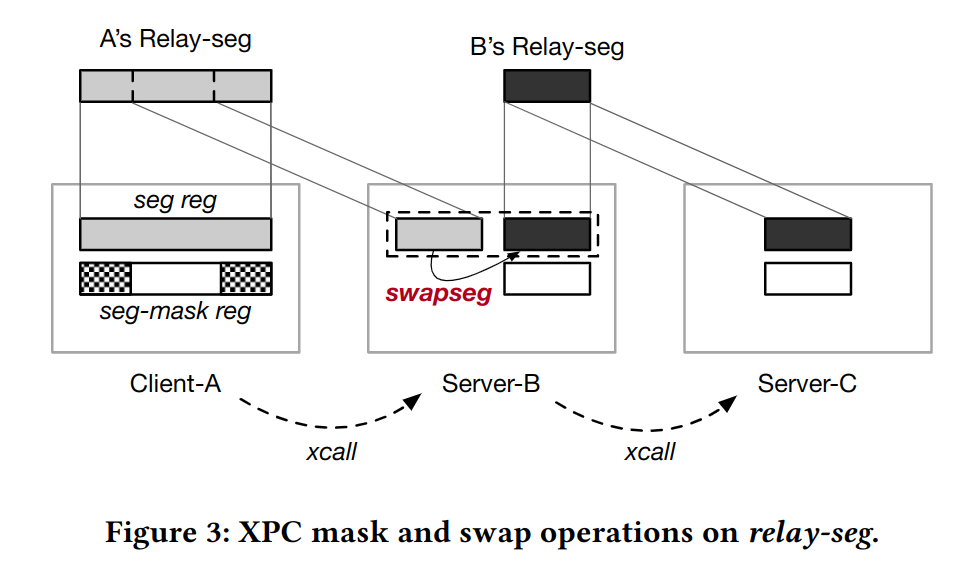

阅读笔记#
XPC#
硬件层面优化IPC性能的实现，我理解为新的进程管理方法，通过引入更复杂的硬件设计来适应microkernel对IPC的高度依赖，有硬件操作系统的趋势？
存在的问题：
解决不了多核跨进程通信问题
设计较为复杂，但安全方面可能比较薄弱，论文中只采用了控制位和预设的物理空间来进行安全检查（可能通过硬件漏洞直接窃听内存中的通信数据
实现高性能IPC的两个重要层面：
如何摆脱kernel带来的开销：
陷入和恢复
IPC 相关执行逻辑
进程上下文切换
如何实现无拷贝通信
设计目标：
无陷入进程切换
无拷贝进程通信
适应现有内核
尽可能简化硬件设计
基本组成：
x-entry:区分ID，访问权限控制xcall-cap
xcall和xret指令：快速的进程切换
地址映射策略relay-seg：使用寄存器保存message在内存中的基址和范围；进程间原子性拥有message控制权，避免TOCTOU攻击
migrating thread model: ？
Zircon通过异步IPC模拟文件系统接口的同步语义带来了高昂的开销
seL4的IPC处理机制，检查以下条件来判断是否采用slowpath还是fastpath：
通信双方有不同的特权级别
通信双方位于不同的核上
message大小是否超出寄存器大小但未超过buffer大小
这些机制可以通过硬件并行化来降低延迟
seL4的IPC通信机制，根据消息长度采用三种策略：寄存器、IPC buffer、shared memory；并不安全，多线程可以篡改数据？
XPC engine：

xcall #reg:
访问bitmap检查xcall-cap
访问x-entry-table并检查valid标志位
将恢复需要的信息推入link stack中
指向callee页表，pc跳转到目标进程entry point，保存caller的信息
xret：
将link stack的栈顶弹出，检查valid标志位，并根据信息返回caller进程（嵌套？）
xcall-cap：xcall-cap-reg保存bitmap在内存中的基址
link stack：可以非阻塞方式写stack
cached x-entries：利用prefetch，进程可提前将x-entry加载到cache
swapseg #reg: reg-seg和seg-list中的一项交换内容

SkyBridge#
论文多次提到熔断漏洞，近几年受到广泛关注和研究的安全性问题；
微内核最关键的机制是核间通信，在用户层实现很多系统级应用，内核只保留最基本的功能；传统的进程通信依赖于内核进程切换，带来了巨大的开销
seL4的fastpath IPC
SkyBridge 提出了一些应用 VMFUNC 的方法：
位于microkernel下方的Rootkernel，使用巨页避免microkernel频繁触发缺页中断；采用Subkernel和Rootkernel两级分管
SkyBridge巧妙地将Client的CR3映射为对应Server的CR3，Client通过EPTP list来指向不同Server的EPT
安全机制在kernel处理IPC，SkyBridge检查process的二进制文件避免非法VMFUNC，通过查表来验证IPC请求
Rootkernel:
从Subkernel启动，通过VMCALL与Subkernel通信
确保大多数VM行为不触发VM exit，VM exits包含三类：
特权指令：不触发VM exits
硬件中断：直接将中断交给microkernel处理
EPT异常（miss，invalid）：Subkernel到Rootkernel采用1GB的页，SkyBridge仅为Rootkernel保留100MB的物理空间，减少TLB miss等问题出现的次数和开销
Subkernel：
server注册：将trampoline code page和stack pages映射到server的虚拟地址空间，为server分配ID
client注册：绑定到指定ID的server，同样进行映射；EPT处理，将client的CR3映射到server的CR3；将所有和server有关的EPTP添加到client的EPTP list
跨虚拟地址空间执行时陷入内核的问题：Subkernel可以记录进程的信息来判断
Rewriting Illegal VMFUNC:
替换VMFUNC指令，若只有一条指令，则直接替换，若需要执行多条指令，则替换为跳转指令，跳转到待执行代码再返回
（具体策略和x86的指令编码有关，暂时还没有深入学习x86体系结构）
CHERI: A Hybrid Capability-System Architecture for Scalable Software Compartmentalization#
Slides: CHERI
其他：UCB PLAS06
简介#
目标：通过软硬件协同的方法，解决有关 TCB 安全问题
将传统方法分为两类：
exploit mitigation和software compartmentalization前者局限于攻击方式
后者引入性能问题和扩展性问题
CPU 未提供细粒度的内存保护
完成的工作：
提出一种新的软硬件架构支持细粒度的隔离机制
在 FPGA、FreeBSD、LLVM 中对架构进行验证
提出一种高效的、可扩展的 MMU 模型
对安全性、性能、特别是兼容性进行分析和验证
方法#
Ambient Authority: 系统访问控制，主体指明对某一客体执行的动作并完成，称该主体使用了环境权限。请求是否授予或拒绝权限取决于动作的属性，比如动作的身份或角色。Confused Deputy Problem: 一个程序通过向另一个程序发起请求，来获取另一个程序的系统权限。（代理混淆问题）例如传统的文件名并不能携带发起请求的程序对这个文件的访问权限，通过代理后，系统并不会处理该程序到文件的权限。Capability-based software compartmentalization:OS-based: HYDRA、EROS、SeL4、Capsicumlanguage-based: E、Joe—E、Caja
局限性：
过于依赖硬件提供的机制，侧信道攻击
TCB 问题需要考虑很多因素比如编译错误，内存分配，文件描述，垃圾回收等，如何最小化 TCB
Understanding the Overheads of Hardware and Language-Based IPC Mechanisms#
这篇文章侧重于性能分析，关于 Rust 的探讨基于 RedLeaf，从参考文献中可以了解相关论文。
硬件隔离机制：VMFUNC、MPK（x86）、MTE（arm）
硬件隔离机制的性能仍受到保存和恢复寄存器、换栈等影响，应用 Rust 隔离可以减少这些开销。
Rust 比 C++ 慢（4-8%），Rust 需要更多运行时检查（更多的分支预测失败），高度抽象和结构体封装（可能）对 Cache 不友好。
Android Binder#
Android Binder 是 Android 中实现的（Client-Server） IPC 方式，软件层面减少进程间跨地址空间通信的拷贝次数。主要组成部分：
Client 进程
Server 进程
Binder 驱动：mmap 向 Server 进程共享数据；线程池线程管理
ServiceManager：管理 Service 注册与查询
注册服务：Server 进程向 Binder 驱动发起 Service 注册请求；Binder 驱动将注册请求转发给 ServiceManager 进程；ServicManager 进程添加 Server 进程信息。
获取服务：Client 进程向 Binder 驱动发起获取服务的请求（服务名称）；Binder 驱动将获取请求转发给 ServiceManager 进程；ServiceManager 查找到 Server 进程信息；通过 Binder 驱动将信息返回给 Client 进程。
使用服务：Binder 驱动先创建一块内核缓冲区，并将 Server 进程的用户地址映射到该区域，避免
copy_to_user()，Client 进程通过系统调用copy_from_user()将数据拷贝到内核缓冲区（当前线程被挂起）；Server 进程收到 Binder 通知后，从线程池中取出对应线程对数据进行处理并将执行结果写入共享内存（相当于写入内核缓冲区）中；Binder 驱动通知内核唤醒 Client 进程，Client 进程通过copy_to_user()从内核缓冲区接收 Server 进程返回对数据。
Binder 驱动位于内核空间，ServiceManager 是用户空间的进程，二者均为 Android 基础架构。
可以将通信过程视为一次跨域调用，Client 向缓冲区传入参数，Server 向缓冲区传入返回值。
一些问题：
ServiceManger 相当于路由，为什么不采用 Client 到 Server 直接的共享内存？Client 数量大时可能会占用 Server 很多地址，Binder 相比于共享内存就是更易于使用开发，抽象得好管理起来比较方便。
多个 Client 同时向同一个 Service 发起请求怎么处理？应该有缓冲队列或者线程调度上的处理，反正 Client 发送请求后会挂起。
通信流程涉及到多少次通知？Binder 通知 Server 处理传入数据、Binder 通知 Client 处理返回数据。
Binder 还是涉及到了一次拷贝的开销，且 Client 地位比较被动，使用服务要被挂起。
User-level Device Drivers: Achieved Performance#
用户态驱动的好处：
ease of development 可以用调试用户态程序的方式调试驱动
fault tolerance 驱动崩溃不会影响内核的运行
maintainability 与内核接口耦合在一起使驱动变得难以维护，中断上下文要预防死锁
驱动在用户态进行开发和测试，开发过程遵循严格的用户接口，这样便于后续将驱动移入内核来提高性能。
驱动可能通过 DMA 直接访问内存，一些先进的硬件可以限制驱动访问的范围。这篇文章尚未涉及 DMA 的安全性。
内核态驱动通过 request_irq() 注册中断处理函数，有很多可以让用户态驱动获得中断消息的方法，例如建立中断到信号的映射、事件队列、轮询某个文件等。这篇文章中的实现办法是用户 open() 和 close() Linux 中的 /proc/irq/n/irq 文件，注册或注销中断处理函数。当中断到来时，内核中断处理函数屏蔽中断并增加中断对应的信号量。用户态进程调用 read() 读取文件时，若有 pending requests 就返回非 0 信号量的，否则睡眠等待中断。
涉及 DMA 的设备需要由驱动程序提供物理地址，这篇文章中通过增加系统调用来让用户态驱动访问 pci_map_xxx 函数将用户地址空间的页映射到设备通过 DMA 访问的物理地址。此外，用户态驱动可通过系统调用对某些页进行标记，防止在 DMA 事务未完成的过程中页被换出内存，目前 Linux 内核已提供了带标记的缓冲区。
这篇文章的实现方法比较共同的点是使用信号量唤醒用户态驱动，使用环形缓冲区保存事务信息，例如网络驱动。测试硬件包括 IDE disk 和 Gigabit ehternet 。从测试结果可以看出，对于带宽较高且中断频率较高的设备，唤醒用户态驱动的开销比较大。本篇文章用到了共享内存，无锁队列，延迟中断唤醒和批量处理等方法，
FBMM: Using the VFS for Extensibility in Kernel Memory Management (HOTOS ‘23)#
非易失内存（Persistent Memory）的设计目标是利用不同存储介质的特性（带宽、延时、功耗、成本等），从整体上优化存储系统。软件方面的实现（传统的 swap 机制）需要对操作系统有一定程度的修改，可以实现对数据页面更加细粒度的控制（冷热、预取、布局等），更好地适应不同应用的负载、延时、带宽要求，缺点是开发起来比较困难，业界有通过修改用户库的方式提供支持，目标是快速落地应用。硬件方面的实现一方面可以采用传统 Cache 分层机制，另一方面也可以由 Controller 进行管理（类似于 SSD），缺点是缺少灵活性且设计成本较高。
这篇文章中提出的 FBMM（File-Based Memory Management）应用 VFS 的接口设计思想在 Linux 中支持易于扩展的内存管理，例如最新的内存分层技术等。现有的 Linux 无法感知物理内存的差异和联系，且内存管理代码耦合性强。MMFS（Memory-Management File System） 可以像操作文件一样分配和释放内存。类似于 HugeTLBFS（大页以文件的形式分配给进程），进程可以显式地调用 MMFS 接口来分配内存。